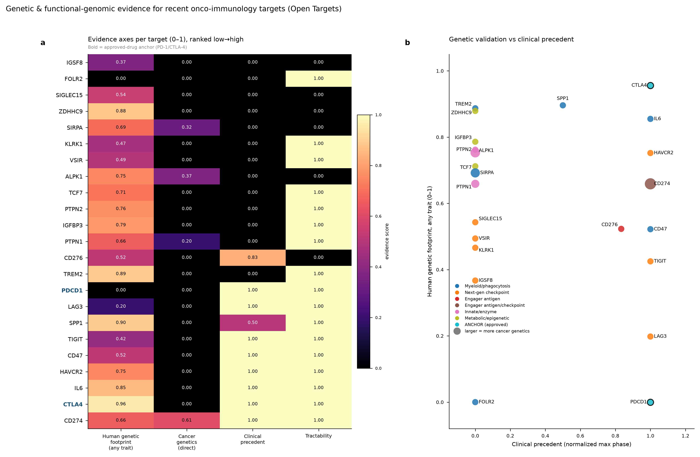
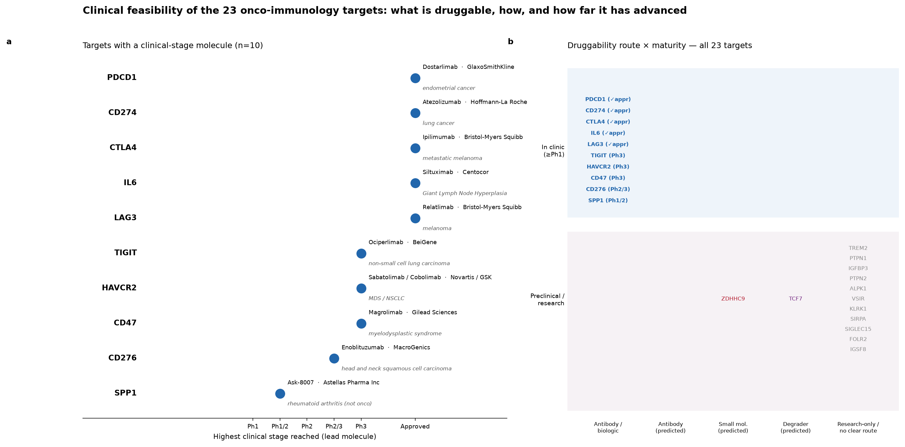
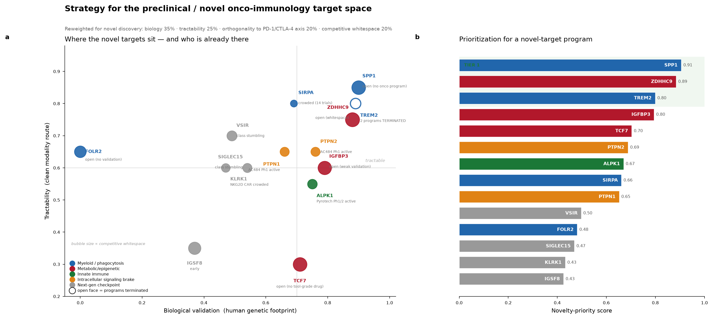
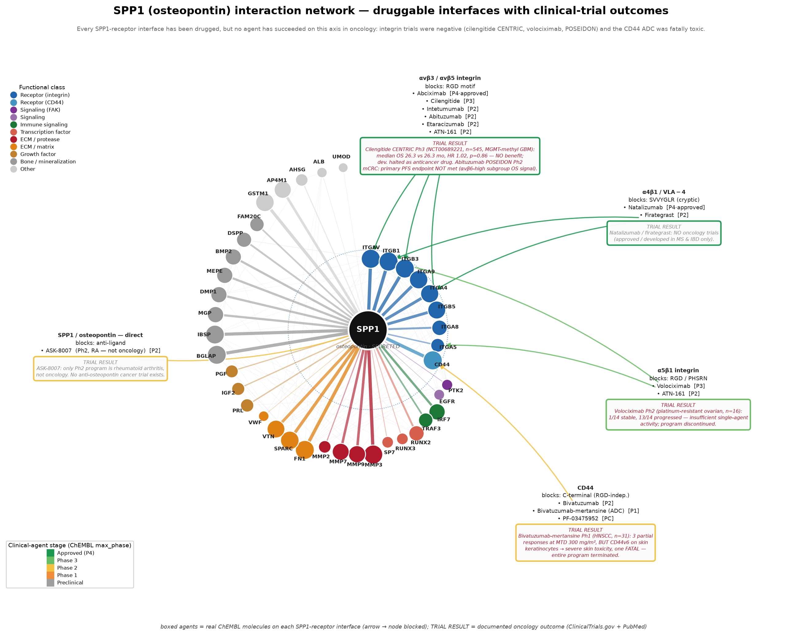

Target profile
An onco-immunology drug-target program: evidence, feasibility, novel-target strategy, development plan & spatially-rationalized bispecifics
Prepared 2026
Executive summary
- Scope — 23 recent onco-immunology targets scored for genetic / functional-genomic evidence, clinical feasibility & novel-target opportunity; deep-dive on a secreted-ligand / receptor immunosuppressive axis.
- Lead thesis — ligand-high tumor-associated macrophages sit adjacent to exhausted CD8 T cells and drive immune escape through the ligand→receptor axis (IO-validated, 2025). A naked function-blocking receptor antibody occupying the ligand-binding region is the lead modality.
- Why receptor-side — every ligand-receptor interface has been drugged, none succeeded in oncology (integrin trials negative; receptor ADC fatally toxic).
- Novel whitespace — the lead ligand, a palmitoyltransferase and a phagocytosis receptor rank highest for a novel-target program; no ligand-neutralizing antibody is in oncology.
- Bispecifics — five spatially-rationalized designs; lead pairs the receptor arm with a checkpoint arm on exhausted CD8.
Genetic & functional-genomic evidence

Per-target evidence axes (Open Targets); immuno-oncology modulators carry little direct cancer-causation signal.
Clinical feasibility

10/23 targets have a clinical-stage molecule; the lead target's most-advanced agent reached Phase 2 in a non-oncology indication.
Novel / preclinical target strategy

Reweighted for novel discovery; the lead ligand, a palmitoyltransferase and a phagocytosis receptor lead. Open faces = terminated programs.
Interaction network + trial outcomes

Every ligand-receptor interface has been drugged; none succeeded in oncology; no ligand-neutralizing cancer trial exists.
Immune–metabolic pathways of three novel targets

Two targets branch from single molecular nodes; the third has a context-independent lineage-factor role that underlies its immunotherapy relevance.
Development plan — naked receptor-blocking antibody

Mechanistic rationale + Stage 0–5 go/no-go cascade. Guardrail A (no cytotoxic payload); Guardrail B (block the ligand site, biomarker-enrich).
Spatially-rationalized bispecific designs

Five arm-A × arm-B designs; requiring BOTH niche antigens gives avidity-driven selectivity.
Data sources & grounding
- Drug/ligand: ChEMBL · Trials: ClinicalTrials.gov + PubMed · Evidence: Open Targets
- Networks: STRING · Expression/compartments: Human Protein Atlas + CELLxGENE CellGuide
- Spatial adjacency: peer-reviewed studies
- Patents: keyword-level web scan (not a professional FTO opinion)
- Caveat: spatial adjacency read from published figures/text, not recomputed from raw spots